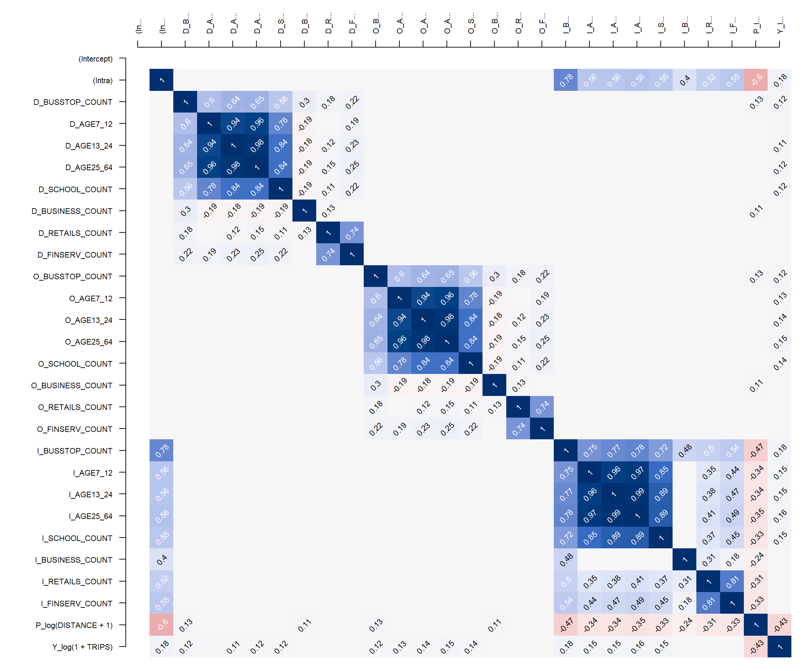
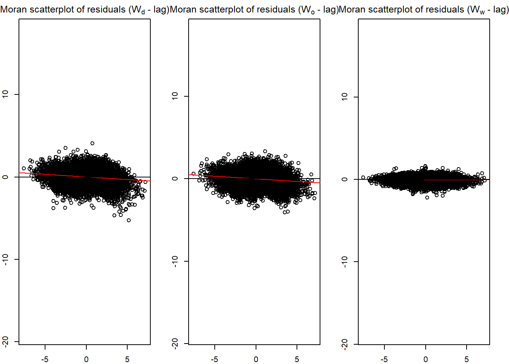
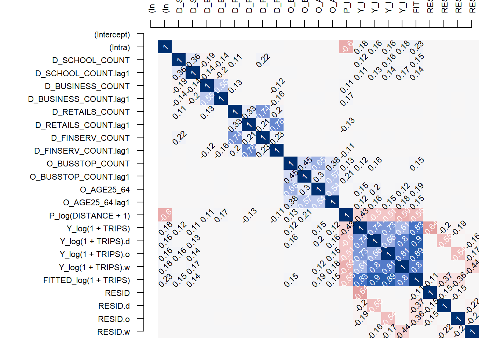
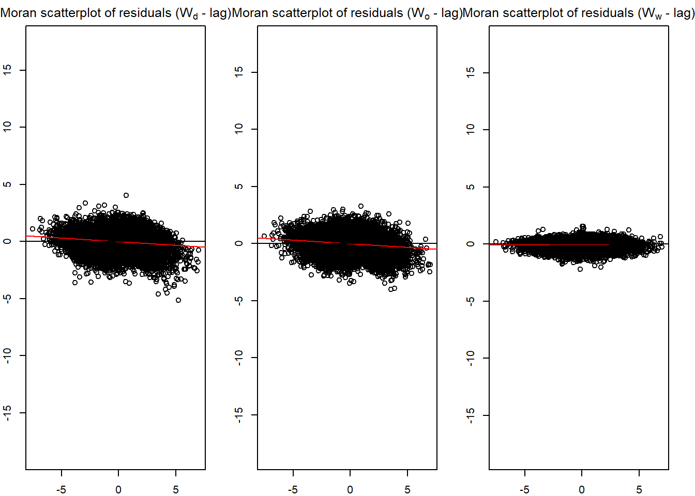

devtools::install_github("LukeCe/spflow")In-class Exercise 5: Spatial Econometric Interaction Modelling
Overview
Spatial Interaction Models have often used to explain origin-destination (OD) flows that arise in fields such as public bus commuting. These models rely on a function of the distance between the origin and destination as well as explanatory variables pertaining to characteristics of both origin and destination locations. Spatial interaction models assume that using distance as an explanatory variable will eradicate the spatial dependence among the sample of OD flows between pairs of locations. The notion that use of distance functions in conventional spatial interaction models effectively captures spatial dependence in interregional flows has long been challenged. In view of the limitation Spatial Interaction Models to account for spatial dependence, Spatial Econometric Interaction Models have been introduce James P. LeSage and R. Kelley Pace (2009).
In this in-class exercise, you will gain hands-on exercise on using spflow package, a R library specially developed for calibrating Spatial Econometric Interaction Models. By the end of this in-class exercise, you will acquire the skills to:
- extract explanatory variables from secondary source,
- assemble and derive explanatory variables from publicly available geospatial data,
- integrate these explanatory variable into a tidy variables tibble data.frame.
- calibrate Spatial Econometric Interaction Models by using spflow.
Getting Started
In this exercise, the development version (0.1.0.9010) of spflow will be used instead of the released version (0.1.0). The code chunk below will be used to install the development version of spflow package.
Next, will will load spflow and other R packages into R environment.
pacman::p_load(tmap, sf, spdep, sp, Matrix,
spflow, reshape2, knitr,
tidyverse)Data Preparation
Before we can calibrate Spatial Econometric Interaction Models by using spflow package, three data sets are required. They are:
- a spatial weights,
- a tibble data.frame consists of the origins, destination, flows and distances between the origins and destination, and
- a tibble data.frame consists of the explanatory variables.
Building the geographical area
For the purpose of this study, URA Master Planning 2019 Planning Subzone GIS data will be used.
In the code chunk below, MPSZ-2019 shapefile will be import into R environment as a sf tibble data.frame called mpsz.
mpsz <- st_read(dsn = "data/geospatial",
layer = "MPSZ-2019") %>%
st_transform(crs = 3414) Reading layer `MPSZ-2019' from data source
`D:\tskam\ISSS624\In-class_Ex\In-class_Ex5\data\geospatial'
using driver `ESRI Shapefile'
Simple feature collection with 332 features and 6 fields
Geometry type: MULTIPOLYGON
Dimension: XY
Bounding box: xmin: 103.6057 ymin: 1.158699 xmax: 104.0885 ymax: 1.470775
Geodetic CRS: WGS 84
Things to learn from the code chunk above
st_read()is used to import the shapefile into R environment as an sf object.st_transform()is used to convert the projection of the input sf object.
Next, the code chunk below will be used to import BusStop shapefile into R environment as an sf object called busstop.
busstop <- st_read(dsn = "data/geospatial",
layer = "BusStop") %>%
st_transform(crs = 3414)Reading layer `BusStop' from data source
`D:\tskam\ISSS624\In-class_Ex\In-class_Ex5\data\geospatial'
using driver `ESRI Shapefile'
Simple feature collection with 5159 features and 3 fields
Geometry type: POINT
Dimension: XY
Bounding box: xmin: 3970.122 ymin: 26482.1 xmax: 48280.78 ymax: 52983.82
Projected CRS: SVY21In this study, our analysis will be focused on planning subzone with bus stop. In view of this, the code chunk below will be used to perform Point-in-Polygon count analysis.
mpsz$`BUSSTOP_COUNT`<- lengths(
st_intersects(
mpsz, busstop))
Thing to learn from the code chunk above
- a new column called BUSSTOP_COUNT will be created in mpsz sf object and the number of bus stop counts will be insert into the newly created column
Next, code chunk below will be used to select planning subzone with bus stops.
mpsz_busstop <- mpsz %>%
filter(BUSSTOP_COUNT > 0)
mpsz_busstopSimple feature collection with 313 features and 7 fields
Geometry type: MULTIPOLYGON
Dimension: XY
Bounding box: xmin: 2667.538 ymin: 21448.47 xmax: 50271.73 ymax: 50256.33
Projected CRS: SVY21 / Singapore TM
First 10 features:
SUBZONE_N SUBZONE_C PLN_AREA_N PLN_AREA_C REGION_N
1 INSTITUTION HILL RVSZ05 RIVER VALLEY RV CENTRAL REGION
2 ROBERTSON QUAY SRSZ01 SINGAPORE RIVER SR CENTRAL REGION
3 FORT CANNING MUSZ02 MUSEUM MU CENTRAL REGION
4 MARINA EAST (MP) MPSZ05 MARINE PARADE MP CENTRAL REGION
5 SENTOSA SISZ01 SOUTHERN ISLANDS SI CENTRAL REGION
6 CITY TERMINALS BMSZ17 BUKIT MERAH BM CENTRAL REGION
7 ANSON DTSZ10 DOWNTOWN CORE DT CENTRAL REGION
8 STRAITS VIEW SVSZ01 STRAITS VIEW SV CENTRAL REGION
9 MARITIME SQUARE BMSZ01 BUKIT MERAH BM CENTRAL REGION
10 TELOK BLANGAH RISE BMSZ15 BUKIT MERAH BM CENTRAL REGION
REGION_C geometry BUSSTOP_COUNT
1 CR MULTIPOLYGON (((28481.45 30... 2
2 CR MULTIPOLYGON (((28087.34 30... 10
3 CR MULTIPOLYGON (((29542.53 31... 6
4 CR MULTIPOLYGON (((35279.55 30... 2
5 CR MULTIPOLYGON (((26879.04 26... 1
6 CR MULTIPOLYGON (((27891.15 28... 10
7 CR MULTIPOLYGON (((29201.07 28... 5
8 CR MULTIPOLYGON (((31269.21 28... 4
9 CR MULTIPOLYGON (((26920.02 26... 21
10 CR MULTIPOLYGON (((27483.57 28... 11Notice that there are 313 planning subzone in this sf object.
Preparing the Spatial Weights
There are three different matrices that can be used to describe the connectivity between planning subzone. They are: contiguity, fixed distance and adaptive distance.
Code chunk below will be used to compute the three spatial weights at one goal.
centroids <- suppressWarnings({
st_point_on_surface(st_geometry(mpsz_busstop))})
mpsz_nb <- list(
"by_contiguity" = poly2nb(mpsz_busstop),
"by_distance" = dnearneigh(centroids,
d1 = 0, d2 = 5000),
"by_knn" = knn2nb(knearneigh(centroids, 3))
)
Things to learn from the code chunk above.
poly2nb()of spdep package is used to build a neighbours list based on regions with contiguous boundaries.dnearneigh()of spdep package is used to identifies neighbours of region centroids by Euclidean distance in the metric of the points between lower and and upper (less than or equal to) bounds.knn2nb()andknearneigh()is used to to build the adaptive spatial weights.list()is used to keep these tree spatial weights in one single list class called mpsz_nb.
mpsz_nb
Important
The report reveals that at fixed distance of 5000, there are at least one planning subzone does not have any neighbour.
Important
It is always a good practice to inspect the spatial weights derived visual.
Code chunks below will be used to plot the spatial weights in mpsz_nb.
plot(st_geometry(mpsz))
plot(mpsz_nb$by_contiguity,
centroids,
add = T,
col = rgb(0,0,0,
alpha=0.5))
title("Contiguity")
plot(st_geometry(mpsz))
plot(mpsz_nb$by_distance,
centroids,
add = T,
col = rgb(0,0,0,
alpha=0.5))
title("Distance")
plot(st_geometry(mpsz))
plot(mpsz_nb$by_knn,
centroids,
add = T,
col = rgb(0,0,0,
alpha=0.5))
title("3 Nearest Neighbors") When you are happy with the results, it is time to save mpsz_nb into an rds file for subsequent use by using the code chunk below.
write_rds(mpsz_nb, "data/rds/mpsz_nb.rds")Preparing The Flow Data
In this section, you will learn how to prepare a flow data at the planning subzone level as shown in the screenshot below.
odbus6_9 <- read_rds("data/rds/odbus6_9.rds")busstop_mpsz <- st_intersection(busstop, mpsz) %>%
select(BUS_STOP_N, SUBZONE_C) %>%
st_drop_geometry()Next, we are going to append the planning subzone code from busstop_mpsz data.frame onto odbus6_9 data frame.
od_data <- left_join(odbus6_9 , busstop_mpsz,
by = c("ORIGIN_PT_CODE" = "BUS_STOP_N")) %>%
rename(ORIGIN_BS = ORIGIN_PT_CODE,
ORIGIN_SZ = SUBZONE_C,
DESTIN_BS = DESTINATION_PT_CODE)Before continue, it is a good practice for us to check for duplicating records.
duplicate <- od_data %>%
group_by_all() %>%
filter(n()>1) %>%
ungroup()If duplicated records are found, the code chunk below will be used to retain the unique records.
od_data <- unique(od_data)It will be a good practice to confirm if the duplicating records issue has been addressed fully.
Next, we will update od_data data frame with the planning subzone codes.
od_data <- left_join(od_data , busstop_mpsz,
by = c("DESTIN_BS" = "BUS_STOP_N")) duplicate <- od_data %>%
group_by_all() %>%
filter(n()>1) %>%
ungroup()od_data <- unique(od_data)od_data <- od_data %>%
rename(DESTIN_SZ = SUBZONE_C) %>%
drop_na() %>%
group_by(ORIGIN_SZ, DESTIN_SZ) %>%
summarise(TRIPS = sum(TRIPS))The od_data data.frame should look similar the table below.
kable(head(od_data, n = 5))| ORIGIN_SZ | DESTIN_SZ | TRIPS |
|---|---|---|
| AMSZ01 | AMSZ01 | 1998 |
| AMSZ01 | AMSZ02 | 8289 |
| AMSZ01 | AMSZ03 | 8971 |
| AMSZ01 | AMSZ04 | 2252 |
| AMSZ01 | AMSZ05 | 6136 |
Before we move to the next task, let’s save od_data into an rds file by using the code chunk below.
write_rds(od_data, "data/rds/od_data.rds")Computing Distance Matrix
In spatial interaction, a distance matrix is a table that shows the distance between pairs of locations. For example, in the table below we can see an Euclidean distance of 3926.0025 between MESZ01 and RVSZ05, of 3939.1079 between MESZ01 and SRSZ01, and so on. By definition, an location’s distance from itself, which is shown in the main diagonal of the table, is 0.

Converting from sf data.table to SpatialPolygonsDataFrame
There are at least two ways to compute the required distance matrix. One is based on sf and the other is based on sp. Past experience shown that computing distance matrix by using sf function took relatively longer time that sp method especially the data set is large. In view of this, sp method is used in the code chunks below.
First as.Spatial() will be used to convert mpsz from sf tibble data frame to SpatialPolygonsDataFrame of sp object as shown in the code chunk below.
mpsz_sp <- as(mpsz_busstop, "Spatial")
mpsz_spclass : SpatialPolygonsDataFrame
features : 313
extent : 2667.538, 50271.73, 21448.47, 50256.33 (xmin, xmax, ymin, ymax)
crs : +proj=tmerc +lat_0=1.36666666666667 +lon_0=103.833333333333 +k=1 +x_0=28001.642 +y_0=38744.572 +ellps=WGS84 +towgs84=0,0,0,0,0,0,0 +units=m +no_defs
variables : 7
names : SUBZONE_N, SUBZONE_C, PLN_AREA_N, PLN_AREA_C, REGION_N, REGION_C, BUSSTOP_COUNT
min values : ADMIRALTY, AMSZ01, ANG MO KIO, AM, CENTRAL REGION, CR, 1
max values : YUNNAN, YSSZ09, YISHUN, YS, WEST REGION, WR, 87 Computing the distance matrix
Next, spDists() of sp package will be used to compute the Euclidean distance between the centroids of the planning subzones.
Q&A
Do you know why the distance is calculated between two centroids of a pair of spatial polygons?
DISTANCE <- spDists(mpsz_sp,
longlat = FALSE)head(DISTANCE, n=c(10, 10)) [,1] [,2] [,3] [,4] [,5] [,6] [,7] [,8]
[1,] 0.0000 305.737 951.8314 5254.066 4975.002 3176.159 2345.174 3455.579
[2,] 305.7370 0.000 1045.9088 5299.849 4669.295 2873.497 2074.691 3277.921
[3,] 951.8314 1045.909 0.0000 4303.232 5226.873 3341.212 2264.201 2890.870
[4,] 5254.0664 5299.849 4303.2323 0.000 7707.091 6103.071 5007.197 3699.242
[5,] 4975.0021 4669.295 5226.8731 7707.091 0.000 1893.049 3068.627 4009.437
[6,] 3176.1592 2873.497 3341.2116 6103.071 1893.049 0.000 1200.264 2532.383
[7,] 2345.1741 2074.691 2264.2014 5007.197 3068.627 1200.264 0.000 1709.443
[8,] 3455.5791 3277.921 2890.8696 3699.242 4009.437 2532.383 1709.443 0.000
[9,] 3860.6063 3612.345 4570.3316 8324.615 2766.650 2606.583 3383.338 5032.870
[10,] 2634.7332 2358.403 3255.0325 6981.431 2752.882 1666.022 2115.640 3815.333
[,9] [,10]
[1,] 3860.606 2634.733
[2,] 3612.345 2358.403
[3,] 4570.332 3255.033
[4,] 8324.615 6981.431
[5,] 2766.650 2752.882
[6,] 2606.583 1666.022
[7,] 3383.338 2115.640
[8,] 5032.870 3815.333
[9,] 0.000 1357.426
[10,] 1357.426 0.000Notice that the output dist is a matrix object class of R. Also notice that the column heanders and row headers are not labeled with the planning subzone codes.
Labelling column and row heanders of a distance matrix
First, we will create a list sorted according to the the distance matrix by planning sub-zone code.
sz_names <- mpsz_busstop$SUBZONE_CNext we will attach SUBZONE_C to row and column for distance matrix matching ahead
colnames(DISTANCE) <- paste0(sz_names)
rownames(DISTANCE) <- paste0(sz_names)Pivoting distance value by SUBZONE_C
Next, we will pivot the distance matrix into a long table by using the row and column subzone codes as show in the code chunk below.
distPair <- melt(DISTANCE) %>%
rename(DISTANCE = value)
head(distPair, 10) Var1 Var2 DISTANCE
1 RVSZ05 RVSZ05 0.0000
2 SRSZ01 RVSZ05 305.7370
3 MUSZ02 RVSZ05 951.8314
4 MPSZ05 RVSZ05 5254.0664
5 SISZ01 RVSZ05 4975.0021
6 BMSZ17 RVSZ05 3176.1592
7 DTSZ10 RVSZ05 2345.1741
8 SVSZ01 RVSZ05 3455.5791
9 BMSZ01 RVSZ05 3860.6063
10 BMSZ15 RVSZ05 2634.7332The code chunk below is used to rename the origin and destination fields.
distPair <- distPair %>%
rename(ORIGIN_SZ = Var1,
DESTIN_SZ = Var2)Now, left_join() of dplyr will be used to flow_data dataframe and distPair dataframe. The output is called flow_data1.
flow_data <- distPair %>%
left_join (od_data) %>%
mutate(TRIPS = coalesce(TRIPS, 0))
Tip
mutate(TRIPS = coalesce(TRIPS, 0)is used to replace NA into 0
The flow_data should look similar the table below.
kable(head(flow_data, n = 10))| ORIGIN_SZ | DESTIN_SZ | DISTANCE | TRIPS |
|---|---|---|---|
| RVSZ05 | RVSZ05 | 0.0000 | 67 |
| SRSZ01 | RVSZ05 | 305.7370 | 549 |
| MUSZ02 | RVSZ05 | 951.8314 | 0 |
| MPSZ05 | RVSZ05 | 5254.0664 | 0 |
| SISZ01 | RVSZ05 | 4975.0021 | 0 |
| BMSZ17 | RVSZ05 | 3176.1592 | 0 |
| DTSZ10 | RVSZ05 | 2345.1741 | 0 |
| SVSZ01 | RVSZ05 | 3455.5791 | 0 |
| BMSZ01 | RVSZ05 | 3860.6063 | 0 |
| BMSZ15 | RVSZ05 | 2634.7332 | 0 |
Before moving on to the next task, let’s save flow_data into an rds file by usign the code chunk below.
write_rds(flow_data, "data/rds/mpsz_flow.rds")Preparing Explanatory Variables
The third input data of spflow is a data.frame that contains all the explanatory variables of the geographical unit (i.e. Planning Subzone).
Population by age group variables
For the purpose of this exercise, we will include three population age-groups as the explanatory variables. They are population age 7-12, 13-24, and 25-64. These information are available in a data file called pop.csv.
The code chunk below will be used to import pop.csv into R environment and save it as an tibble data.frame object called pop.
pop <- read_csv("data/aspatial/pop.csv")In the code chunk below, left_join() of dplyr package is used to append the population by the three age cohorts with mpsz_busstop and an output sf object called mpsz_var is created.
mpsz_var <- mpsz_busstop %>%
left_join(pop,
by = c("PLN_AREA_N" = "PA",
"SUBZONE_N" = "SZ")) %>%
select(1:2, 7:11) %>%
rename(SZ_NAME = SUBZONE_N,
SZ_CODE = SUBZONE_C)The mpsz_var should look similar the table below.
kable(head(mpsz_var[, 1:6], n = 6))| SZ_NAME | SZ_CODE | BUSSTOP_COUNT | AGE7_12 | AGE13_24 | AGE25_64 | geometry |
|---|---|---|---|---|---|---|
| INSTITUTION HILL | RVSZ05 | 2 | 330 | 360 | 2260 | MULTIPOLYGON (((28481.45 30… |
| ROBERTSON QUAY | SRSZ01 | 10 | 320 | 350 | 2200 | MULTIPOLYGON (((28087.34 30… |
| FORT CANNING | MUSZ02 | 6 | 0 | 10 | 30 | MULTIPOLYGON (((29542.53 31… |
| MARINA EAST (MP) | MPSZ05 | 2 | 0 | 0 | 0 | MULTIPOLYGON (((35279.55 30… |
| SENTOSA | SISZ01 | 1 | 200 | 260 | 1440 | MULTIPOLYGON (((26879.04 26… |
| CITY TERMINALS | BMSZ17 | 10 | 0 | 0 | 0 | MULTIPOLYGON (((27891.15 28… |
Deriving explanatory variables using Point-in-Polygon count
First, we will import schools.rds into R environment.
schools <- read_rds("data/rds/schools.rds")The, code chunk below will be used to perform Point-in-Polygon count analysis and save the derived values into a new field of mpsz_var called SCHOOL_COUNT.
mpsz_var$`SCHOOL_COUNT`<- lengths(
st_intersects(
mpsz_var, schools))Next, we will import the rest of the shapefiles into R environemnt using the code chunk below.
business <- st_read(dsn = "data/geospatial",
layer = "Business") %>%
st_transform(crs = 3414)Reading layer `Business' from data source
`D:\tskam\ISSS624\In-class_Ex\In-class_Ex5\data\geospatial'
using driver `ESRI Shapefile'
Simple feature collection with 6550 features and 3 fields
Geometry type: POINT
Dimension: XY
Bounding box: xmin: 3669.148 ymin: 25408.41 xmax: 47034.83 ymax: 50148.54
Projected CRS: SVY21 / Singapore TMretails <- st_read(dsn = "data/geospatial",
layer = "Retails") %>%
st_transform(crs = 3414)Reading layer `Retails' from data source
`D:\tskam\ISSS624\In-class_Ex\In-class_Ex5\data\geospatial'
using driver `ESRI Shapefile'
Simple feature collection with 37635 features and 3 fields
Geometry type: POINT
Dimension: XY
Bounding box: xmin: 4737.982 ymin: 25171.88 xmax: 48265.04 ymax: 50135.28
Projected CRS: SVY21 / Singapore TMfinserv <- st_read(dsn = "data/geospatial",
layer = "FinServ") %>%
st_transform(crs = 3414)Reading layer `FinServ' from data source
`D:\tskam\ISSS624\In-class_Ex\In-class_Ex5\data\geospatial'
using driver `ESRI Shapefile'
Simple feature collection with 3320 features and 3 fields
Geometry type: POINT
Dimension: XY
Bounding box: xmin: 4881.527 ymin: 25171.88 xmax: 46526.16 ymax: 49338.02
Projected CRS: SVY21 / Singapore TMentertn <- st_read(dsn = "data/geospatial",
layer = "entertn") %>%
st_transform(crs = 3414)Reading layer `entertn' from data source
`D:\tskam\ISSS624\In-class_Ex\In-class_Ex5\data\geospatial'
using driver `ESRI Shapefile'
Simple feature collection with 114 features and 3 fields
Geometry type: POINT
Dimension: XY
Bounding box: xmin: 10809.34 ymin: 26528.63 xmax: 41600.62 ymax: 46375.77
Projected CRS: SVY21 / Singapore TMfb <- st_read(dsn = "data/geospatial",
layer = "F&B") %>%
st_transform(crs = 3414)Reading layer `F&B' from data source
`D:\tskam\ISSS624\In-class_Ex\In-class_Ex5\data\geospatial'
using driver `ESRI Shapefile'
Simple feature collection with 1919 features and 3 fields
Geometry type: POINT
Dimension: XY
Bounding box: xmin: 6010.495 ymin: 25343.27 xmax: 45462.43 ymax: 48796.21
Projected CRS: SVY21 / Singapore TMlr <- st_read(dsn = "data/geospatial",
layer = "Liesure&Recreation") %>%
st_transform(crs = 3414)Reading layer `Liesure&Recreation' from data source
`D:\tskam\ISSS624\In-class_Ex\In-class_Ex5\data\geospatial'
using driver `ESRI Shapefile'
Simple feature collection with 1217 features and 30 fields
Geometry type: POINT
Dimension: XY
Bounding box: xmin: 6010.495 ymin: 25134.28 xmax: 48439.77 ymax: 50078.88
Projected CRS: SVY21 / Singapore TMThen,we will perform Point-in-Polygon analysis for each of these sf object by using the code chunk below.
mpsz_var$`BUSINESS_COUNT`<- lengths(
st_intersects(
mpsz_var, business))
mpsz_var$`RETAILS_COUNT`<- lengths(
st_intersects(
mpsz_var, retails))
mpsz_var$`FINSERV_COUNT`<- lengths(
st_intersects(
mpsz_var, finserv))
mpsz_var$`ENTERTN_COUNT`<- lengths(
st_intersects(
mpsz_var, entertn))
mpsz_var$`FB_COUNT`<- lengths(
st_intersects(
mpsz_var, fb))
mpsz_var$`LR_COUNT`<- lengths(
st_intersects(
mpsz_var, lr))glimpse(mpsz_var)Rows: 313
Columns: 14
$ SZ_NAME <chr> "INSTITUTION HILL", "ROBERTSON QUAY", "FORT CANNING", "…
$ SZ_CODE <chr> "RVSZ05", "SRSZ01", "MUSZ02", "MPSZ05", "SISZ01", "BMSZ…
$ BUSSTOP_COUNT <int> 2, 10, 6, 2, 1, 10, 5, 4, 21, 11, 2, 9, 6, 1, 4, 7, 24,…
$ AGE7_12 <dbl> 330, 320, 0, 0, 200, 0, 0, 0, 350, 470, 0, 300, 390, 0,…
$ AGE13_24 <dbl> 360, 350, 10, 0, 260, 0, 0, 0, 460, 1160, 0, 760, 890, …
$ AGE25_64 <dbl> 2260, 2200, 30, 0, 1440, 0, 0, 0, 2600, 6260, 630, 4350…
$ geometry <MULTIPOLYGON [m]> MULTIPOLYGON (((28481.45 30..., MULTIPOLYG…
$ SCHOOL_COUNT <int> 1, 0, 0, 0, 0, 0, 0, 0, 0, 2, 0, 1, 1, 0, 0, 0, 1, 0, 0…
$ BUSINESS_COUNT <int> 6, 4, 7, 0, 1, 11, 15, 1, 10, 1, 17, 6, 0, 0, 51, 2, 3,…
$ RETAILS_COUNT <int> 26, 207, 17, 0, 84, 14, 52, 0, 460, 34, 263, 55, 37, 1,…
$ FINSERV_COUNT <int> 3, 18, 0, 0, 29, 4, 6, 0, 34, 4, 26, 4, 3, 6, 59, 3, 8,…
$ ENTERTN_COUNT <int> 0, 6, 3, 0, 2, 0, 0, 0, 1, 0, 0, 0, 0, 0, 3, 0, 0, 0, 0…
$ FB_COUNT <int> 4, 38, 4, 0, 38, 15, 5, 0, 20, 0, 9, 25, 0, 0, 9, 1, 3,…
$ LR_COUNT <int> 3, 11, 7, 0, 20, 0, 0, 0, 19, 2, 4, 4, 1, 1, 13, 0, 17,…Before moving to the next task, let’s save mpsz_var into an rds file by using the code chunk below.
write_rds(mpsz_var, "data/rds/mpsz_var.rds")Preparing spflow objects
Three spflow objects are required, they are:
spflow_network-class, an S4 class that contains all information on a spatial network which is composed by a set of nodes that are linked by some neighborhood relation.spflow_network_pair-class, an S4 class which holds information on origin-destination (OD) pairs. Each OD pair is composed of two nodes, each belonging to one network. All origin nodes must belong to the same origin network should be contained in onespflow_network-class, and likewise for the destinations.spflow_network_multi-class, an S4 class that gathers information on multiple objects of typesspflow_network-classandspflow_network_pair-class. Its purpose is to ensure that the identification between the nodes that serve as origins or destinations, and the OD-pairs is consistent (similar to relational data bases).
Let us retrieve by using the code chunk below
mpsz_nb <- read_rds("data/rds/mpsz_nb.rds")
mpsz_flow <- read_rds("data/rds/mpsz_flow.rds")
mpsz_var <- read_rds("data/rds/mpsz_var.rds")Creating spflow_network-class objects
spflow_network-class is an S4 class that contains all information on a spatial network which is composed by a set of nodes that are linked by some neighborhood relation. It can be created by using spflow_network() of spflow package.
For our model, we choose the contiguity based neighborhood structure.
mpsz_net <- spflow_network(
id_net = "sg",
node_neighborhood = nb2mat(mpsz_nb$by_contiguity),
node_data = mpsz_var,
node_key_column = "SZ_CODE")
mpsz_netSpatial network nodes with id: sg
--------------------------------------------------
Number of nodes: 313
Average number of links per node: 6.077
Density of the neighborhood matrix: 1.94% (non-zero connections)
Data on nodes:
SZ_NAME SZ_CODE BUSSTOP_COUNT AGE7_12 AGE13_24 AGE25_64
1 INSTITUTION HILL RVSZ05 2 330 360 2260
2 ROBERTSON QUAY SRSZ01 10 320 350 2200
3 FORT CANNING MUSZ02 6 0 10 30
4 MARINA EAST (MP) MPSZ05 2 0 0 0
5 SENTOSA SISZ01 1 200 260 1440
6 CITY TERMINALS BMSZ17 10 0 0 0
--- --- --- --- --- --- ---
308 NEE SOON YSSZ07 12 90 140 590
309 UPPER THOMSON BSSZ01 47 1590 3660 15980
310 SHANGRI-LA AMSZ05 12 810 1920 9650
311 TOWNSVILLE AMSZ04 9 980 2000 11320
312 MARYMOUNT BSSZ02 25 1610 4060 16860
313 TUAS VIEW EXTENSION TSSZ06 11 0 0 0
SCHOOL_COUNT BUSINESS_COUNT RETAILS_COUNT FINSERV_COUNT ENTERTN_COUNT
1 1 6 26 3 0
2 0 4 207 18 6
3 0 7 17 0 3
4 0 0 0 0 0
5 0 1 84 29 2
6 0 11 14 4 0
--- --- --- --- --- ---
308 0 0 7 0 0
309 3 21 305 30 0
310 3 0 53 9 0
311 1 0 83 11 0
312 3 19 135 8 0
313 0 53 3 1 0
FB_COUNT LR_COUNT COORD_X COORD_Y
1 4 3 103.84 1.29
2 38 11 103.84 1.29
3 4 7 103.85 1.29
4 0 0 103.88 1.29
5 38 20 103.83 1.25
6 15 0 103.85 1.26
--- --- --- --- ---
308 0 0 103.81 1.4
309 5 11 103.83 1.36
310 0 0 103.84 1.37
311 1 1 103.85 1.36
312 3 11 103.84 1.35
313 0 0 103.61 1.26Creating spflow_network-class object
spflow_network-class object is an S4 class which holds information on origin-destination (OD) pairs. Each OD pair is composed of two nodes, each belonging to one network. All origin nodes must belong to the same origin network should be contained in one spflow_network-class object and likewise for the destinations.
In spflow package, spflow_network_pair()
mpsz_net_pairs <- spflow_network_pair(
id_orig_net = "sg",
id_dest_net = "sg",
pair_data = mpsz_flow,
orig_key_column = "ORIGIN_SZ",
dest_key_column = "DESTIN_SZ")
mpsz_net_pairsSpatial network pair with id: sg_sg
--------------------------------------------------
Origin network id: sg (with 313 nodes)
Destination network id: sg (with 313 nodes)
Number of pairs: 97969
Completeness of pairs: 100.00% (97969/97969)
Data on node-pairs:
DESTIN_SZ ORIGIN_SZ DISTANCE TRIPS
1 RVSZ05 RVSZ05 0 67
314 SRSZ01 RVSZ05 305.74 251
627 MUSZ02 RVSZ05 951.83 0
940 MPSZ05 RVSZ05 5254.07 0
1253 SISZ01 RVSZ05 4975 0
1566 BMSZ17 RVSZ05 3176.16 0
--- --- --- --- ---
96404 YSSZ07 TSSZ06 26972.97 0
96717 BSSZ01 TSSZ06 25582.48 0
97030 AMSZ05 TSSZ06 26714.79 0
97343 AMSZ04 TSSZ06 27572.74 0
97656 BSSZ02 TSSZ06 26681.7 0
97969 TSSZ06 TSSZ06 0 270Creating spflow_network_multi-class object
The sp_multi_network-class combines information on the nodes and the node-pairs and also ensures that both data sources are consistent. For example, if some of the origins in the sp_network_pair-class are not identified with the nodes in the sp_network_nodes-class an error will be raised.
mpsz_multi_net <- spflow_network_multi(mpsz_net,
mpsz_net_pairs)
mpsz_multi_netCollection of spatial network nodes and pairs
--------------------------------------------------
Contains 1 spatial network nodes
With id : sg
Contains 1 spatial network pairs
With id : sg_sg
Availability of origin-destination pair information:
ID_ORIG_NET ID_DEST_NET ID_NET_PAIR COMPLETENESS C_PAIRS C_ORIG C_DEST
sg sg sg_sg 100.00% 97969/97969 313/313 313/313Given the information on origins, destinations and OD pairs we can use the spflow_map() method for a simple geographic representation of the largest flows.
plot(mpsz$geometry)
spflow_map(
mpsz_multi_net,
flow_var = "TRIPS",
add = TRUE,
legend_position = "bottomleft",
filter_lowest = .999,
remove_intra = TRUE,
cex = 1)
Warning
This is a time consuming process, be patient!
Correlation Analysis
Multicollinearity refers to a situation in which more than two explanatory variables in a multiple regression model are highly linearly related. In this situation, the coefficient estimates of the multiple regression may change erratically in response to small changes in the data or the procedure used to fit the model.
In order to avoid including explanatory variables that are highly correlated, spflow provides two functions:
pair_cor()to create a correlation matrix, andcor_image()to plot the correlation matrix as a correlogram.
cor_formula <- log(1 + TRIPS) ~
BUSSTOP_COUNT +
AGE7_12 +
AGE13_24 +
AGE25_64 +
SCHOOL_COUNT +
BUSINESS_COUNT +
RETAILS_COUNT +
FINSERV_COUNT +
P_(log(DISTANCE + 1))
cor_mat <- pair_cor(
mpsz_multi_net,
spflow_formula = cor_formula,
add_lags_x = FALSE)
colnames(cor_mat) <- paste0(
substr(
colnames(cor_mat),1,3),"...")
cor_image(cor_mat)
Note
cor_fomula defines which variables should be included in the correlation matrix.

Model Calibration
The core function of the package is spflow(). It provides an interface to three different estimators of spatial econometric interaction models (Dargel 2021) that allow the user to estimate origin-destination flows with spatial autocorrelation.
The three different estimators currently supported by spflow are:
Maximum Likelihood Estimation (MLE) which is the default estimation procedure. The matrix form estimation in the framework of this model was first developed by LeSage and Pace (2008) and then improved by Dargel (2021) . Spatial two-stage least squares (S2SLS)
Spatial Two-stage Least Squares (S2SLS) estimator is an adaptation of the one proposed by Kelejian and Prucha (1998), to the case of origin-destination flows, with up to three neighborhood matrices Dargel (2021). A similar estimation is done by Tamesue and Tsutsumi (2016). The user can activate the S2SLS estimation via the estimation_control argument using the input spflow_control(estimation_method = “s2sls”).
Bayesian Markov Chain Monte Carlo (MCMC) estimator is based on the ideas of LeSage and Pace (2009) and incorporates the improvements proposed in Dargel (2021) . The estimation is based on a tuned Metropolis-Hastings sampler for the auto-regressive parameters, and for the remaining parameters it uses Gibbs sampling. The routine uses 5500 iterations of the sampling procedure and considers the first 2500 as burn-in period. The user can activate the S2SLS estimation via the estimation_control argument using the input spflow_control(estimation_method = “mcmc”).
Estimation with default settings requires two arguments: an sp_multi_network-class and a flow_formula. The flow_formula specifies the model we want to estimate. The function offers a formula interface adapted to spatial interaction models, which has the following structure: Y ~ O_(X1) + D_(X2) + I_(X3) + P_(X4). This structure reflects the different data sources involved in such a model. On the left hand side there is the independent variable Y which corresponds to the vector of flows. On the right hand side we have all the explanatory variables. The functions O_(…) and D_(…) indicate which variables are used as characteristics of the origins and destinations respectively. Similarly, I_(…) indicates variables that should be used for the intra-regional parameters. Finally, P_(…) declares which variables describe origin-destination pairs, which most frequently will include a measure of distance.
All the declared variables must be available in the provided spflow_network_multi() object, which gathers information on the origins and destinations (inside spflow_network() objects), as well as the information on the origin-destination pairs (inside a spflow_network_pair() object).
Using the short notation Y ~ . is possible and will be interpreted as usual, in the sense that we use all variables that are available for each data source. Also mixed formulas, such as Y ~ . + P_(log(X4) + 1), are possible. When the dot shortcut is combined with explicit declaration, it will only be used for the non declared data sources.
The base model
Let us calibrate a base model with the following configuration:
- Explanatory variables use as characteristics of the origins: BUSSTOP_COUNT and AGE25_64.
- Explanatory variables use as characteristics of the destinations: SCHOOL_COUNT, BUSINESS_COUNT, RETAILS_COUNT, FINSERV_COUNT.
- Explanatory variable describes origin-destination pairs: DISTANCE
The code chunk will be as follow:
base_model <- spflow(
spflow_formula = log(1 + TRIPS) ~
O_(BUSSTOP_COUNT +
AGE25_64) +
D_(SCHOOL_COUNT +
BUSINESS_COUNT +
RETAILS_COUNT +
FINSERV_COUNT) +
P_(log(DISTANCE + 1)),
spflow_networks = mpsz_multi_net)
base_model--------------------------------------------------
Spatial interaction model estimated by: MLE
Spatial correlation structure: SDM (model_9)
Dependent variable: log(1 + TRIPS)
--------------------------------------------------
Coefficients:
est sd t.stat p.val
rho_d 0.680 0.004 192.552 0.000
rho_o 0.678 0.004 187.730 0.000
rho_w -0.396 0.006 -65.588 0.000
(Intercept) 0.410 0.065 6.266 0.000
(Intra) 1.313 0.081 16.263 0.000
D_SCHOOL_COUNT 0.017 0.002 7.885 0.000
D_SCHOOL_COUNT.lag1 0.002 0.004 0.551 0.582
D_BUSINESS_COUNT 0.000 0.000 3.015 0.003
D_BUSINESS_COUNT.lag1 0.000 0.000 -0.249 0.803
D_RETAILS_COUNT 0.000 0.000 -0.306 0.759
D_RETAILS_COUNT.lag1 0.000 0.000 0.152 0.880
D_FINSERV_COUNT 0.002 0.000 6.787 0.000
D_FINSERV_COUNT.lag1 -0.002 0.001 -3.767 0.000
O_BUSSTOP_COUNT 0.002 0.000 6.807 0.000
O_BUSSTOP_COUNT.lag1 -0.001 0.000 -2.364 0.018
O_AGE25_64 0.000 0.000 7.336 0.000
O_AGE25_64.lag1 0.000 0.000 -2.797 0.005
P_log(DISTANCE + 1) -0.050 0.007 -6.792 0.000
--------------------------------------------------
R2_corr: 0.6942936
Observations: 97969
Model coherence: Validatedplot(base_model)Residual diagnostics
In building explanatory models, it is important to check if the model calibrate conform to the statistical assumption of the statistical methods used. The beauty of spflow package is that it provides several functions to support residual diagnostics needs.
In the code chunk below, spflow_moran_plots() is used.
old_par <- par(mfrow = c(1, 3),
mar = c(2,2,2,2))
spflow_moran_plots(base_model)
par(old_par)Next, pair_cor() can be used to inspect the relationship of the residual and the explanatory variables by using the code chunk below.
corr_residual <- pair_cor(base_model)
colnames(corr_residual) <- substr(colnames(corr_residual),1,3)
cor_image(corr_residual)
model.df <- as_tibble(base_model@spflow_indicators) %>%
mutate(FITTED_Y = round(exp(FITTED),0))mpsz_flow1 <- mpsz_flow %>%
left_join(model.df) %>%
select(1:4,8) %>%
mutate(diff = (FITTED_Y-TRIPS))Working with model control
spflow_formula <- log(1 + TRIPS) ~
O_(BUSSTOP_COUNT +
AGE25_64) +
D_(SCHOOL_COUNT +
BUSINESS_COUNT +
RETAILS_COUNT +
FINSERV_COUNT) +
P_(log(DISTANCE + 1))
model_control <- spflow_control(
estimation_method = "mle",
model = "model_8")
mle_model8 <- spflow(
spflow_formula,
spflow_networks = mpsz_multi_net,
estimation_control = model_control)
mle_model8--------------------------------------------------
Spatial interaction model estimated by: MLE
Spatial correlation structure: SDM (model_8)
Dependent variable: log(1 + TRIPS)
--------------------------------------------------
Coefficients:
est sd t.stat p.val
rho_d 0.689 0.003 196.832 0.000
rho_o 0.687 0.004 192.214 0.000
rho_w -0.473 0.003 -142.469 0.000
(Intercept) 1.086 0.049 22.275 0.000
(Intra) 0.840 0.075 11.255 0.000
D_SCHOOL_COUNT 0.019 0.002 8.896 0.000
D_SCHOOL_COUNT.lag1 0.019 0.004 5.130 0.000
D_BUSINESS_COUNT 0.000 0.000 3.328 0.001
D_BUSINESS_COUNT.lag1 0.000 0.000 1.664 0.096
D_RETAILS_COUNT 0.000 0.000 -0.414 0.679
D_RETAILS_COUNT.lag1 0.000 0.000 -0.171 0.864
D_FINSERV_COUNT 0.002 0.000 6.150 0.000
D_FINSERV_COUNT.lag1 -0.003 0.001 -4.601 0.000
O_BUSSTOP_COUNT 0.003 0.000 7.676 0.000
O_BUSSTOP_COUNT.lag1 0.000 0.000 0.552 0.581
O_AGE25_64 0.000 0.000 6.870 0.000
O_AGE25_64.lag1 0.000 0.000 -0.462 0.644
P_log(DISTANCE + 1) -0.125 0.005 -22.865 0.000
--------------------------------------------------
R2_corr: 0.6965974
Observations: 97969
Model coherence: Validatedold_par <- par(mfrow = c(1, 3),
mar = c(2,2,2,2))
spflow_moran_plots(mle_model8)
par(old_par)